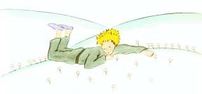

Mais il arriva que le petit prince, ayant longtemps marché à travers les sables, les rocs et les neiges, découvrit enfin une route. Et les routes vont toutes chez les hommes.
– Bonjour, dit-il.
C’était un jardin fleuri de roses.
– Bonjour, dirent les roses.
Le petit prince les regarda. Elles ressemblaient toutes à sa fleur.
– Qui êtes-vous ? leur demanda-t-il, stupéfait.
– Nous sommes des roses, dirent les roses.
– Ah ! fit le petit prince…
Et il se sentit très malheureux. Sa fleur lui avait raconté qu’elle était seule de son espèce dans l’univers. Et voici qu’il en était cinq mille, toutes semblables, dans un seul jardin !

« Elle serait bien vexée, se dit-il, si elle voyait ça… elle tousserait énormément et ferait semblant de mourir pour échapper au ridicule. Et je serais bien obligé de faire semblant de la soigner, car, sinon, pour m’humilier moi aussi, elle se laisserait vraiment mourir… »
Puis il se dit encore : « Je me croyais riche d’une fleur unique, et je ne possède qu’une rose ordinaire. Ça et mes trois volcans qui m’arrivent au genou, et dont l’un, peut-être, est éteint pour toujours, ça ne fait pas de moi un bien grand prince… » Et, couché dans l’herbe, il pleura.